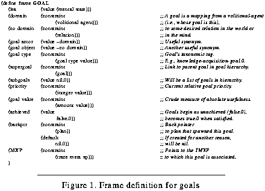

Table of Contents
Table of Contents
 Previous Chapter
Previous Chapter
Table of Contents
Previous Chapter
The goals of this chapter are to specify how a system might reflect upon its reasoning so as to understand why its reasoning fails and to describe how it can use this understanding to decide what to learn. The details that address such goals comprise a computational model of introspective explanation and form the first half of our process theory of introspective learning introduced in the previous chapter. Although we do not model all of the attributes one might normally equate with human introspection (such as self-reports on the feelings of pain or perception), we provide a model that begins to account for the human ability to consider one's own, conscious deliberations. By no means does this suggest, however, that Meta-XP structures literally float about within the head, nor does IML theory claim that people have complete and accurate records of past reasoning from which they can make evaluations.(1) Rather, it suggests that certain patterns of reasoning failure are apparent to persons engaged in reflection, and that people can use associated expectations to generate explanations for why they fail at various types of everyday reasoning. In turn, these explanations allow the learner to form specific learning goals.
To make these assertions concrete and to further develop the process theory of learning outlined in the previous chapter, we examine how a multistrategy learning system such as Meta-AQUA introspectively explains its failures and decides what to learn in the context of a story understanding task. Meta-AQUA's task is to create a causally connected conceptual interpretation of an input stream of concepts that represent a story sequence. If the system fails at this comprehension task, it subsequently learns by (1) using case-based methodologies to analyze and explain the cause of its misunderstanding by retrieving past cases of meta-reasoning; (2) using these past cases to deliberately create a set of learning goals to change its knowledge; and then (3) using nonlinear planning techniques to choose or construct some learning method by which it achieves these goals and hence improve its future performance. Together, these three processes form a hybrid approach combining the use of past experience to generate a set of learning goals and the use of first principles to achieve such goals.(2)
This chapter describes a case-based theory of introspection. In support of this aim, Section 6.1 briefly outlines case-based reasoning from first-order and second order perspectives. The first part of our hybrid model is then illustrated in some detail using the Meta-AQUA example from Section 2.1.1. Section 6.2 explores how blame-assignment (subprocess number 1, above) is performed during introspection, whereas Section 6.3 explains how learning goals are spawned when deciding what to learn (subprocess number 2). Section 6.4 summarizes and concludes by specifying the relation between the Meta-AQUA system and traditional case-based reasoning approaches. The next chapter will continue the Meta-AQUA example begun here to illustrate how learning goals are accomplished using the metaphor of non-linear planning (subprocess number 3).
As a method for reasoning from concrete past experience, rather than from first principles or abstract rules, case-based reasoning (CBR) (Hammond, 1989; Kolodner, 1993; Kolodner & Simpson, 1989; Riesbeck & Schank, 1989; Simpson, 1985) has been presented as a cognitive model of human performance. The approach has been used to model many cognitive activities such as story understanding (Martin, 1990; Ram, 1989), explanation (Kass, Leake, & Owens, 1986; Ram, 1989), planning (Hammond, 1989; Veloso, 1994), design (Hinrichs, 1992), diagnosis (Koton, 1989; Turner, 1989), legal reasoning (Ashley & Rissland, 1988; Bain, 1986), economics reasoning (Pazzani, 1990a), conflict resolution (Simpson, 1985; Sycara, 1987), analogy (Carbonell, 1983, 1986), ethical judgement (Ashley & McLaren, 1995), and troubleshooting (Redmond, 1992). The CBR approach is to retrieve from memory the most similar case, adapt the past case to fit the current situation, then apply the adapted result to the current problem. For example, judges use precedence when issuing sentences for convicted criminals, rather than rules (Bain, 1986). The most similar past legal case is adapted and applied to the current case to derive a sentence. Humans also exhibit this reliance on past examples when learning domains such as mathematics and text-editor skills (Ross, 1989). This chapter proposes that CBR provides a formalism for modeling introspection as well.
As argued in Section 5.4.3.1, to reason effectively about one's own knowledge, goals, and reasoning failure requires an ability to explicitly introspect. A computational model of introspective learning is a second-order theory that contains a formal language for representing first-order processes and that specifies the method of processing and learning from instances represented in this language. The reasoning algorithm used to perform such explanation and learning is similar to the interpretive case-based algorithms used to understand events and processes represented in the original domain.
In general terms, case-based understanding can be specified with the following four steps (Kolodner, 1993):
As input, take a representation of some domain episode along with its context and a reasoning goal to provide focus.
When using case-based introspection, the system's domain is itself. Therefore, the algorithm is modified as follows:
As input, take a representation of some prior failed reasoning (represented with a TMXP) such as an episode of case-based understanding and the goal to explain the failure.
Based on salient cues in the input, retrieve a prior case of reflection (represented with an IMXP) to interpret the input.
Adapt the old case to fit the current situation.
Output the result as the system's self-understanding.
More specifically, such an introspective process can be applied to explicit representations of failed episodes of reasoning and therefore used in the task of reflective blame-assignment. That is, when an understanding system encounters an anomalous input representation, it attempts to explain the anomaly. When explanation fails, a system can use case-based reasoning to retrieve past cases of introspective reasoning that explain the explanation failure. These cases are IMXPs that represent abstract causal patterns of reasoning failure.
Several computational systems explain reasoning failures. CELIA (Redmond, 1992) is a case-based problem-solving system that learns in the domain of engine diagnosis by observing an expert troubleshooter. In Redmond's theory, four possible failure types exist (one contradiction and three variations of impasse): Incorrect prediction, unexplained connection, unknown goal, and unfamiliar information. For each one, a set of possible root causes exist that could explain the failure. CELIA performs a preliminary mapping from failure (symptom) to cause (fault) by using a discrimination net during initial blame assignment, and uses the resultant general characterization of failure to select a learning (repair) method. Although further blame assignment is performed by the chosen method, the initial causal determination functions as a direct pointer toward relevant repairs. After determining the root cause, CELIA will execute any learning method for which its immediate preconditions are satisfied. Alternatively, Meta-AQUA uses a characterization of failure to retrieve a meta-explanation that can more completely explain the failure; Meta-AQUA's subsequent choice of a learning method is more indirect and mediated by learning goals.
The use of a discrimination net in CELIA explains the failure implicitly. Each node in the net contains a test whose answer determines a directional branching along net links. The terminal leaves of the net contain a characterization of the failure cause, rather than a structural and causal explanation. It is possible that some of the failure explanation could be formally recovered from the tree (depending on the nature of the questions), but this approach is somewhat problematic. In contrast, explicit explanations of failure include prior causal information and relationships that account for the failure and contain a declarative representation that can be analyzed, manipulated, and adapted to more fully meet a given situation (including situations not specifically foreseen by the knowledge engineer). Furthermore, formal explanation structures can be learned as a system encounters new environments or as particular circumstances change.(3) A case-based approach using explanation patterns represents a powerful inference method that welds past experience to the task of understanding the failure (Schank & Owens, 1987).
When the Meta-AQUA system detects a reasoning failure, the performance module passes a trace of the reasoning to the learning subsystem. At this time, the learner needs to explain why the failure occurred by applying an introspective explanation to the trace. The IMXP is retrieved using the failure characterization as a probe into memory (i.e., the failure type acts as indexing vocabulary). The retrieved meta-explanation is instantiated and bound to the trace of reasoning that preceded the failure. The resulting structure is then checked for applicability. If the IMXP does not apply correctly, then another probe is attempted. An accepted IMXP either provides a set of learning goals that are designed to modify the system's BK or generates additional questions to be posed about the failure. The following section describes the algorithm that is used in this blame-assignment process.
The main control algorithm Meta-AQUA uses for introspective (second-order) explanation is essentially the same as the XP-application control algorithm used in explanatory (first-order) reasoning in both the AQUA (Ram, 1991, 1993, 1994) and SWALE (Kass, Leake, & Owens, 1986; Schank & Leake, 1990) systems. To describe how introspective reasoning works, some background information on XP-application follows.
As described by Section 4.4, the XP knowledge structure is a directed graph that links antecedent conditions to their consequences. The set of sink nodes in the graph is called the PRE-XP-NODES. These nodes represent what must be present in the current situation for the XP to apply. One distinguished node in this set is called the EXPLAINS node. It is bound to the concept that is being explained. For an XP to apply to a given situation, all PRE-XP-NODES must be in the current set of beliefs. If they are not, then the explanation is not appropriate to the situation. If the structure is not rejected, then all source nodes (XP-ASSERTED-NODES) are checked. For each XP-ASSERTED node verified, all adjacent nodes are marked as verified, and the verification marks are propagated toward the EXPLAINS node. If all XP-ASSERTED-NODES can be verified, then the entire explanation is verified. Gaps in the explanation occur when one or more XP-ASSERTED-NODES remain unverified. Each gap results in a question, which provides the system with a focus for reasoning and learning, and limits the inferences pursued by the system.
Given this methodology, the algorithm for explaining and learning from a reasoning failure works much the same way. Step 2 of Figure 48 on page 126 outlines the control algorithm for blame assignment in an introspective multistrategy learner. The step is refined in Figure 50 below.
Figure 50. Reflective blame assignment
The identification of blame during the learning phase is analogous to the method above used in AQUA or SWALE to explain anomalies in story inputs. Instead of taking as input a conceptual representation of events in the world and outputting an explanation of the anomaly, however, the blame assignment process in Meta-AQUA takes as input a conceptual representation of the reasoning performed in explaining an event in the world and outputs an explanation of the reasoning failure. Just as the XP application algorithm can be applied to events in the world, the reflective blame-assignment algorithm in Figure 50 can be applied to a set of mental events, using Meta-XPs with a single level of recursion.
A characterization of the reasoning failure from the system's vocabulary of failure terms is used as an index to retrieve an abstract IMXP. Here the characterization serves as a probe into memory, rather than providing a direct explanation. The retrieved IMXP structure is then bound with the trace of the reasoning to produce a parameterized token. The PRE-XP-NODES are then checked to see if they are consistent with the current representation of the reasoning that produced an understanding the story. If they all can be verified then the Meta-XP applies to the situation. If any are rejected, then the explanation is rejected. If any of the nodes are neither confirmed nor rejected, a question is posed on the node. When the question is not answered, the introspection is suspended, the reasoning is indexed in memory and the performance task is resumed. When future opportunities warrant, the system can resume the introspective process.
More specifically, Figure 50 specifies that the IMXP applies if all PRE-XP-NODES are in the set of beliefs with respect to the FK. If this is so, then the system makes sure that no element of the set of XP-ASSERTED-NODES is contradicted by something in the story model or reasoning model within the FK. But if this is so, it tries to recursively explain this sub-anomaly. If the anomalous item cannot be immediately explained, it rejects the explanation and searches for another one.(4)
If no anomalous nodes exist in the XP-ASSERTED-NODES, then the system checks to see if all nodes in the set of XP-ASSERTED-NODES are in the set of beliefs with respect to the FK (i.e., all are believed). If all are believed, it accepts the explanation.
If any nodes are not yet believed, the system poses a question to find out whether or not they can be believed (i.e., to determine if the system can infer the belief). The representation for the recursive question "Is Z believable?" is listed in Figure 51. That is, literally it asserts "The truth value of Z is in the set of beliefs with respect to the foreground knowledge, no?" This question is an introspective question because it is posed on a representation of part of the reasoning, rather than on a representation of a part of the story (see Oehlmann, Sleeman, & Edwards, 1993, for a related model of introspective questioning).
Figure 51. Representation of the question "Is Z believable?"
Once an IMXP is retrieved and successfully applied to the trace of failed reasoning provided by some TMXP, the system must generate a set of learning goals as previously outlined. This process will be covered in Section 6.3. But first, the following section places the process into context using a Meta-AQUA example from Section 2.1.
As presented by Chapter II, Meta-AQUA was written to test our theory of understanding, introspection, and learning. Given the drug-bust story of Figure 52 (reprinted from Figure 11), the system attempts to understand each sentence by incorporating it into its current story representation, explain any anomalous or interesting features of the story, and learn from any reasoning failures. Numerous incorrect inferences can be made from this story, depending on the knowledge of the reader. Meta-AQUA's background knowledge includes general facts about dogs and sniffing, including the fact that dogs bark when threatened, but it has no knowledge of police dogs. It also knows cases of gun smuggling, but has never seen drug interdiction.
Figure 52. The drug-bust story (HC1)
As will be recalled, Meta-AQUA had detected an anomaly when the dog barked at the luggage because it had only experienced dogs barking at animate objects (see program output in Figure 53). The program then naively explained the anomaly as the dog's response to a threat from the luggage. When the story provides a better explanation of the barking episode, the system concludes that the reasoning had produced a faulty explanation, and therefore it enters a learning cycle.
Figure 53. Meta-AQUA output during hypothesis generation of HC1
The system characterizes the reasoning error as a contradiction caused by the incorrect retrieval of a known explanation ("dogs bark when threatened by objects," erroneously assumed to be applicable), and a missing explanation ("the dog barked because it detected marijuana," the correct explanation in this case). During blame assignment, Meta-AQUA uses this characterization as an index to retrieve an abstract case called a Meta-XP that is applied to a trace of the reasoning that produced the failure. Figure 54 shows the instantiated result in an explanation of its reasoning error. This composite meta-explanation consists of three parts: a Novel-Situation centered around Retrieval Failure, an Erroneous-Association centered around Expectation Failure and an Incorrect-Domain-Knowledge centered around Incorporation Failure.
Figure 54. Instantiated IMXP for mis-explanation
The abstract IMXP from which this instantiation originates, IMXP-NOVEL-SITUATION-ALTERNATIVE-REFUTED, captures a common pattern of failure in systems that are learning new concepts. When a concept is being learned, it may be overly specialized. Slight variation on the concept will cause the system to try to explain it, but without experience with the concept, the system may generate an inappropriate explanation. The proper explanation may not be known because the situation is novel.
As seen in Figure 54, the vertical chain of processes starting with the node labeled "Pose Question" represents part of a TMXP. This trace records the decisions preceding the detection of the explanation failure (i.e., that the dog was actually barking because it detected the contraband, not out of defensive instincts). The IMXP structure formally explains the node labeled Expectation Failure, although in general, it gives the causal chain of events for much of the reasoning associated with all parts of the error.(5) To check whether or not this explanation applies to the failure, Meta-AQUA checks the truth values of nodes A2, E, and the EXPLAINS node. Because these already exist as known entities in the representations (i.e., inFK), the XP is accepted.
Although the information in Figure 54 appears to be complex, the IMXP simplifies the amount of detail the reasoner must consider during blame assignment by abstracting away much of this information. To show what the system actually considers, Figure 55 represents an overlay that corresponds to Figure 54 (mentally align the shaded nodes, such as the Incorporation Failure marked IF, between the two figures to see the simplification Figure 55 provides). The remaining details are not considered in depth during evaluation.
Figure 55. IMXP abstraction of causal factors involved in story HC1
A screen shot of the Meta-AQUA output during the learning associated with this example is shown in Figure 56. The left window in the screen displays processing output, whereas the right side shows internal representations. In this case, the right half of the figure shows the outermost instantiated frame representation of the IMXP depicted as a graph in Figure 54.
Figure 56. Learning output and frame representation of the Meta-XP used in example story
Given a reasoning failure, the task of the learning system is to adjust its knowledge so that such reasoning failures will not recur in similar situations. To perform this adjustment, the learner constructs a learning strategy that is designed to satisfy specific learning goals. These goals are created in a decision process that circumscribes what needs to be learned. The decision is made in response to the explanation of failure generated during reflective blame assignment. The overall aim of the system is to turn reasoning failures into opportunities to learn and to improve the system's performance.
To provide focus for learning, a set of learning goals are spawned from the explanation of the failure. In many theories, goals are an implicit, desired state and have no special representation other than the representation for that state itself. Newell (1982) considers a goal as "a body of knowledge of a state of affairs in the environment" (p. 101), but one especially distinguished from common bodies of knowledge so that an agent will strive to achieve them. In all other structural ways, goals are the same as other bodies of knowledge. Newell & Simon (1972) consider the methods for achieving goals as part of the goal structure itself. In our approach, goals are state descriptions with annotations and a particular structure. The methods for achieving goals and the knowledge associated with the states they seek are considered separate entities.
Schank & Abelson (1977) enumerate a goal taxonomy that contains seven different types of goals. IML theory collapses these seven into three broad distinctions (see Figure 57). An achievement goal represents a state an agent wishes to achieve in the world or in the BK. These goals represent the traditional interpretation of goal in that the state is currently not what is desired, and to achieve the goal state some operations will be required to accomplish transformations that result in the goal state. Contrastingly, a prevention goal is an undesired state that the reasoner wishes to avoid, and a maintenance goal is a state that the reasoner wishes to preserve. Both of these two type of states may be achieved by setting up conditions that affect other agents (such as threats) or by doing nothing at all except monitoring the states and preparing contingency plans.
Figure 57. Broad goal categories
Figure 58 depicts the generic frame definition for a goal; whereas, the end of Appendix D contains instantiated goal examples. A goal is essentially a binary relation from volitional-agent to a desired state (i.e., relation) in either the world or in a body of knowledge. Goals are arranged in hierarchies such that the achievement of subgoals contribute to the achievement of supergoals. From a given goal, pointers exists to both superiors and subordinates in the hierarchy, as well as a direct pointer to the plan for which they are in service. Also associated with each goal is a type designation, a flag that indicates whether it is successful, a relative priority, and an absolute estimate of usefulness. Most importantly, a pointer exists with each goal to the trace of the reasoning that spawned and pursued the goal. When the goals are suspended and later resumed during opportunistic reasoning, the reasoner can use this pointer to locate the TMXP required to resume the processing associated with the goal (whether the goal is pursuing a state in the world or a change in the BK).
 Figure 58. Frame definition for goals
Just as standard goals represent what an agent needs in the world, learning goals represent what a system needs to know (Cox & Ram, 1994b; Ram, 1991; 1993; Ram & Hunter, 1992; Ram & Leake, 1995). These goals are spawned when deciding what to learn or when subgoaling on a superordinate learning goal. Learning goals help guide the learning process by suggesting strategies that would allow the system to learn knowledge required to avoid future failures. Learning goals specify the desired structure and content of knowledge, as well as the ways in which knowledge is organized in memory. Learning goals also facilitate opportunistic learning (see Hammond, Converse, Marks, & Seifert, 1993; Ram, 1991; 1993; Ram & Hunter, 1992); that is, if all information necessary for learning is not available at the time it is determined what is needed to be learned (e.g., when a question is posed), then a learning goal can be suspended, indexed in memory, and resumed at a later time when the information becomes available.
Figure 59 lists the types of learning goals used in IML theory. All of these goals are achievement goals because they attempt to achieve some new state in the BK, rather than prevent or maintain some state.(6) Some learning goals seek to add, delete, generalize or specialize a given concept or procedure. Others deal with the ontology of the knowledge, that is, with the kinds of categories that constitute particular concepts. Many learning goals are unary in that they take a single target as argument. For example, a knowledge acquisition goal seeks to determine a single piece of missing knowledge, such as the answer to a particular question. A knowledge refinement goal seeks a more specialized interpretation for a given concept in memory, whereas a knowledge expansion goal seeks a broader interpretation that explores connections with related concepts.
Figure 59. A taxonomy of learning goals
Other learning goals are n-ary in nature because they take two or more arguments. A knowledge differentiation goal is a goal to determine a change in a body of knowledge such that two or more items are separated conceptually. In contrast, a knowledge reconciliation goal is one that seeks to merge multiple items that were mistakenly considered separate entities.
Both expansion goals and reconciliation goals may include/spawn a knowledge organization goal that seeks to reach a particular configuration of the BK. Usually a learner wants to reorganize the existing knowledge so that it is made available to the reasoner at the appropriate time, as well as modify the structure or content of a concept itself. Such reorganization of knowledge affects the conditions under which a particular piece of knowledge is retrieved or the kinds of indexes associated with an item in memory. Because the desire can be either to organize a particular state or to organize two or more states with respect to each other, this goal type may take one or more arguments.
A list of specific learning-goals that need to be spawned are included as part of the representational structure of each composite IMXP. When the IMXP is bound to the trace of the failure, the goals are automatically bound to particular points in the representation of the trace (via unification of variables) that provide the most likely location of failure. As will be seen in the next chapter, these are only starting points; additional subgoals may be spawned to support the original goals from the IMXP. The goals are placed on a priority queue of current goals to be pursued by the next stage of the learning process.

Faced with the structure of the reasoning error produced by the blame-assignment phase, the learner determines the learning goals for the system. First, since the seemingly anomalous input (marked "Old Input" in Figure 54) has been incorporated into the story and later reinforced by the coherence of the story structure, and since no contradictions occurred as a result of this inference, the learner posts a knowledge reconciliation goal (see G1 in Figure 60). The goal is to adjust the background knowledge so that neither dogs barking at animate objects nor dogs barking at inanimate objects will be considered anomalous by the understander. This learning goal is appropriate because even though one item is an instantiated token (a particular dog barked at a specific inanimate object), while the other is a type definition (concept specifying that dogs generally bark at animate objects), they are similar enough to each other to be reconcilable.
Figure 60. Two learning goals spawned in story HC1
Secondly, given that an expectation failure triggered the learning, and (from the blame assignment phase) given that the failure resulted from the interaction of misindexed knowledge and a novel situation, Meta-AQUA posts a goal to differentiate between the two explanations for why the dog barked (nodes M and M´ in Figure 60). Since the conflicting explanations are significantly different (for example, they do not share the same predicate, i.e., detect versus threaten), a knowledge differentiation goal is licensed, rather than a goal to reconcile the two types of explanations. The differentiation goal is achieved if the system can retrieve proper explanations given various situations. The original misunderstanding of the story occurred, not because the explanation that dogs bark when threatened is incorrect in general, but rather because the system did not know the proper conditions under which this explanation applies.
In addition to posting these two learning goals, Meta-AQUA places a tentative ordering on their execution (see Figure 56. "Learning output and frame representation of the Meta-XP used in example story" on page 145 for program behavior when deciding what to learn). With no other specific knowledge concerning their respective relations, a good default heuristic is to order them by the temporal sequence of the failures involved in the original reasoning trace. The reason this may be useful is that if it is determined that the first failure was indeed not an error but a misunderstanding or was caused by faulty input, then the reasoning that followed from the first failure (or other assumptions depending on the nature of the first failure that led to the second) may have contributed to the cause of the second. Thus, learning acquired about the first failure may show that the subsequent reasoning was irrelevant, or it may yield more information to be used on the second goal. Therefore, the stage that decides what to learn outputs the knowledge reconciliation goal with priority over the knowledge differentiation goal.
Although learning goals are explicit in the Meta-AQUA system, one should not assume that they are always deliberate goals in cognitive terms; rather, they are as much a computational convenience as a conscious pursuit. As Barsalou (1995) notes, an implicit goal-orientation exists in all learning agents. Thus, one must be careful to distinguish between the computational benefit of expressing goals explicitly and the cognitive interpretation in which some goals may be considered to be either implicit in the behavior (the agent behaves as if having the goal) or subconsciously pursued. I make no claim as to which stance is preferred. For example, it cannot be reasonably claimed that humans actively form a goal to compare visual images, although they constantly do make such comparisons. However, humans can form high-level goals when learning. For instance, novices learning LISP exhibit the goal of trying to understand a programming error by choosing the strategy of re-reading textual instructions or reviewing an earlier example (Pirolli & Recker, 1994; see also Ng & Bereiter, 1991). From a strictly computational perspective, however, the research presented here intends to show that the metaphor of goal-driven planning is a computationally useful one when cast in a learning context. The pursuit of this goal is continued in the next chapter.
This chapter has examined the first half of the hybrid process model of IML theory, concentrating on introspective explanation and the subsequent spawning of learning goals. It has outlined a taxonomy of goal types, including both reasoning and learning goals, and has illustrated these concepts with an example from the Meta-AQUA system.
Although Meta-AQUA is firmly in the CBR tradition, our approach diverges from it somewhat. At least three elements traditionally characterize CBR. First, CBR usually processes instances or concrete episodic cases. However, some systems emphasize the integration of generalized knowledge and cases (e.g., Aamodt, 1994; Kolodner & Simpson, 1989; Simpson, 1985), and moreover, like Meta-AQUA, some CBR systems actually process abstract cases, including XPs (e.g., Kerner, 1995; Schank et al., 1994). Second, CBR emphasizes the role of memory retrieval of past examples, rather than reasoning from first principles. This focus has led to research on indexing vocabulary and case adaptation. However, Meta-AQUA is a hybrid system that combines the CBR of the first two learning phases with the nonlinear planning of the third. Finally, traditional CBR systems stress goal-directed activity to focus both processing and learning (Kolodner, 1993; Ram & Hunter, 1992; Schank, 1982). Our approach to learning is also goal-directed, but in a very different style. Meta-AQUA is the first CBR system to specifically plan in the knowledge space using goals that specify changes in that space. Unlike INVESTIGATOR (Hunter, 1990a), which creates plans in the external world to achieve learning goals (e.g., access a database to answer a question), Meta-AQUA's plans operate on the internal world of the system's background knowledge.
The next chapter will continue the example to see how Meta-AQUA's learning plans are constructed using a metaphor of nonlinear planning given the learning goals spawned by the case-based method. This is the second part of the hybrid learning model.
Table of Contents
 Next Chapter
Next Chapter